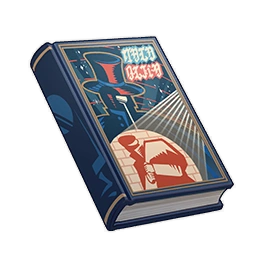

Fontaine · Books & Literature
Robben versus Chesterton: Iridescent Brooch
This three-volume Fontaine detective novel follows narrator Poiret and his uncle Chesterton as they investigate the Phantom Gentleman Fantomas Robben and the theft of an Iridescent Starstone Brooch. The collection explicitly calls itself fiction.

A detective novel with an explicit fiction notice
The book’s description calls it a popular Fontaine novel about the Phantom Gentleman Fantomas Robben and detective Chesterton’s first confrontation. It also states that the work is fiction and that similarities to real people or events are coincidental.
The three volumes form one mystery narrated by Poiret, who says Chesterton is his uncle. The plot’s names can be compared with Fontaine’s cast, but the disclaimer should remain part of any interpretation.
Volume I: the brooch vanishes
Poiret arrives at the Court of Fontaine with little Mora and joins his famous uncle’s investigation of Robben. The Steambird and police watch a mansion after Robben announces that he will steal the Iridescent Starstone Brooch.
At midnight an explosion cuts the lights; a flash follows, and the brooch is gone from its display. Poiret hears a journalist celebrate Robben’s theatrical escape. The opening leaves the reader with the apparent theft and a crowd that may have missed the real method.
Volume II: the brooch may still be there
Back at Chesterton’s home, Poiret recounts what happened. Chesterton reasons that the explosion concealed the sound of a clockwork meka and that the device may itself be bait. The supposed disappearance of the brooch could be a performance designed to convince everyone that it is already gone.
Chesterton’s theory is that Robben could then gain access to the mansion using a fabricated identity and take the brooch without raising suspicion. The volume shifts the puzzle from a dramatic escape toward a staged crime scene.
Volume III: the detective turns to Poiret
Poiret follows Chesterton’s reasoning and considers everyone present as a potential accomplice: the journalist, a Maison Gardiennage officer, and a Marechaussee Phantom investigator. He even suggests that Robben might be a group rather than an individual.
Chesterton points out the missing possibility: the supposed nephew introduced himself as Poiret, a name Chesterton had never met before. The story ends with Chesterton identifying the narrator as Robben. That is the novel’s resolution, not evidence about the real Fontaine detective assistant who shares the name.
Do not collapse the fictional and in-game Poirets
The in-game detective assistant Poiret and the novel’s narrator share a name, which makes the parallel noticeable. The book nevertheless labels its plot fictional and says similarities are coincidental; the shared name does not prove the characters are identical or that the heist happened in Fontaine’s history.
The collection is best read as a self-contained detective story, while any cross-reference to the game’s actual investigators remains a question rather than a canon identity reveal.
This is an original CoreGG reading guide, not an official HoYoverse article or a reproduction of the game text. Source links below identify the records used so you can check the original context.
Sources & references
Check these sources for the original game text and reference trail.